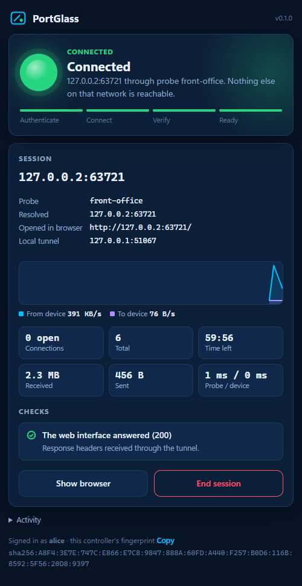
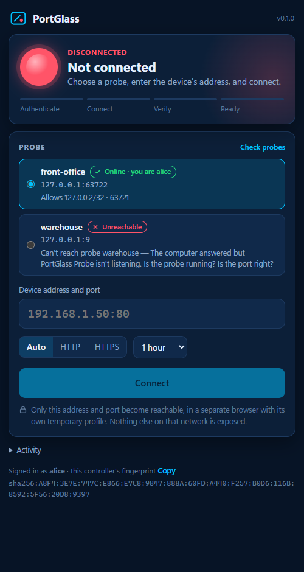
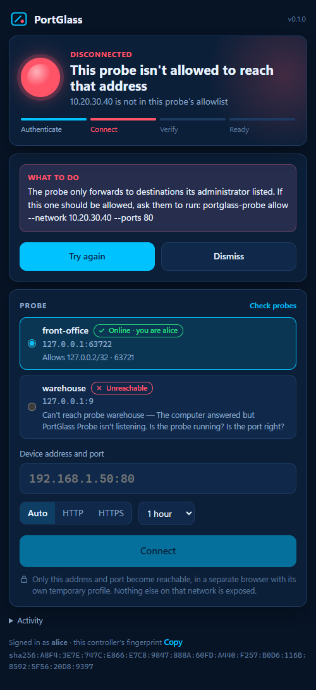
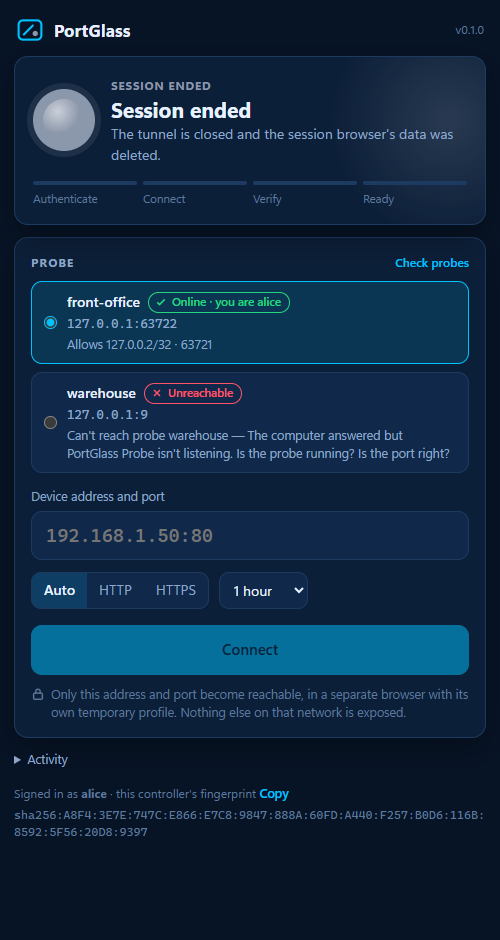

Pick a probe, type the device's address, and a dedicated browser opens on its real admin page — as if it were on your desk. No VPN, no remote desktop, no routing a whole network.
v0.1.0 · Windows · MIT · for authorized IT support

A small probe on a computer at the remote site forwards one TCP port to one approved address, for you only, for a limited time. Everything between you and the probe is TLS 1.3 with both sides' certificates pinned.
Your controller and the probe prove who they are with certificates whose fingerprints each side pinned in advance — like SSH keys.
The probe checks the address and port against its own allowlist, pins the address, and test-connects before granting a session.
Your installed Chrome opens with a brand-new profile, pointed at the device's own address through the tunnel. Close it and everything is deleted.
The light follows the actual session: authentication, the probe's connection to the device, heartbeats, and a test connection to the device every ten seconds.

Disconnected — or the device stopped answering.
Connected. The device answers through the tunnel.

Every failure says what happened and how to fix it.

Session ended. Tunnel closed, browser data deleted.
Amber while it authenticates, connects and verifies the tunnel end to end.
PortGlass minimizes suspicious behavior by minimizing what it can do — not by hiding.
Deny by default. Loopback and cloud-metadata addresses need a rule written for them. Host names are resolved once and pinned. Edits to its policy apply in seconds.
On close, expiry, revocation, a lost connection or a stopped probe, every forwarded connection is cut. The browser and its profile go with it.
Both ends log who reached what, when, and how it ended. Never page content, passwords or tokens.
Technician PC with Google Chrome, and a Windows computer at the site. Both run without elevation.
# Technician portglass init # prints your fingerprint # At the site portglass-probe init --name front-office # prints the probe's fingerprint portglass-probe authorize --name alice --fingerprint sha256:... portglass-probe allow --network 192.168.1.50 --ports 80,443 portglass-probe run # Technician portglass probe add --name front-office --address 10.0.5.20:47100 --fingerprint sha256:... portglass
Try it on one PC first: ./scripts/launch-demo.ps1 starts a mock printer, a probe and the controller.
Docs: architecture ·
security model ·
deployment, firewall & EDR ·
troubleshooting.